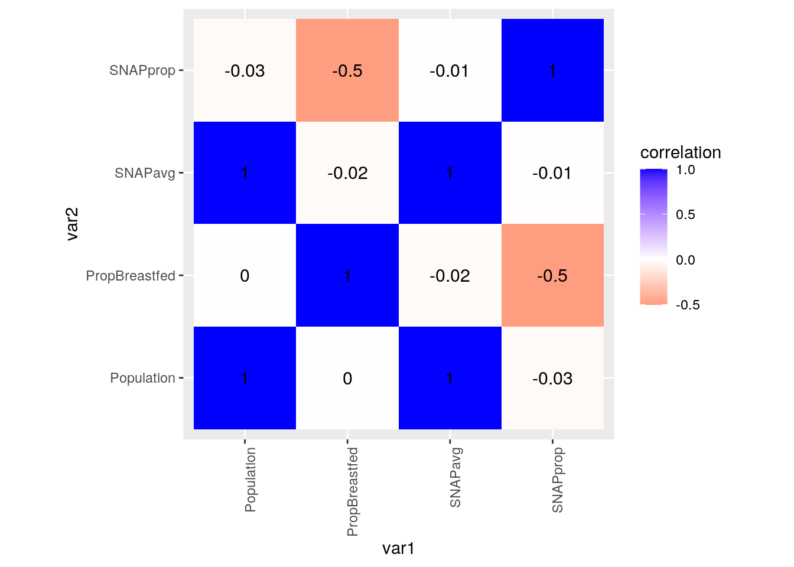
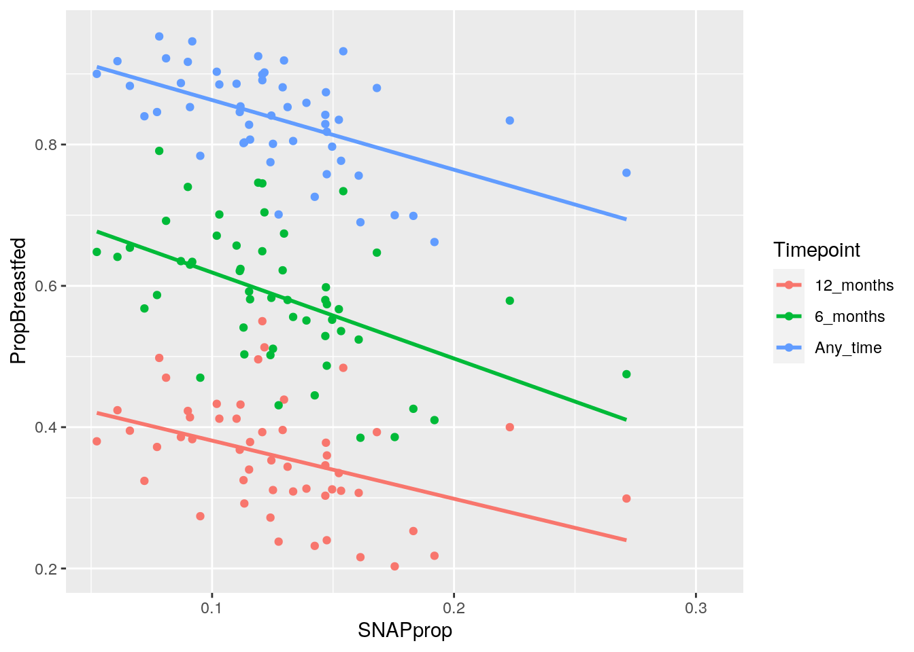
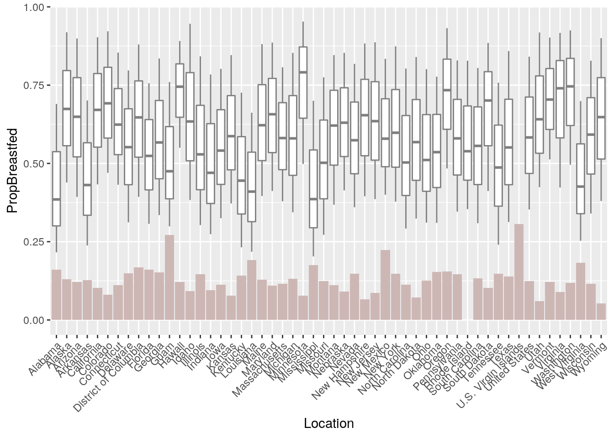
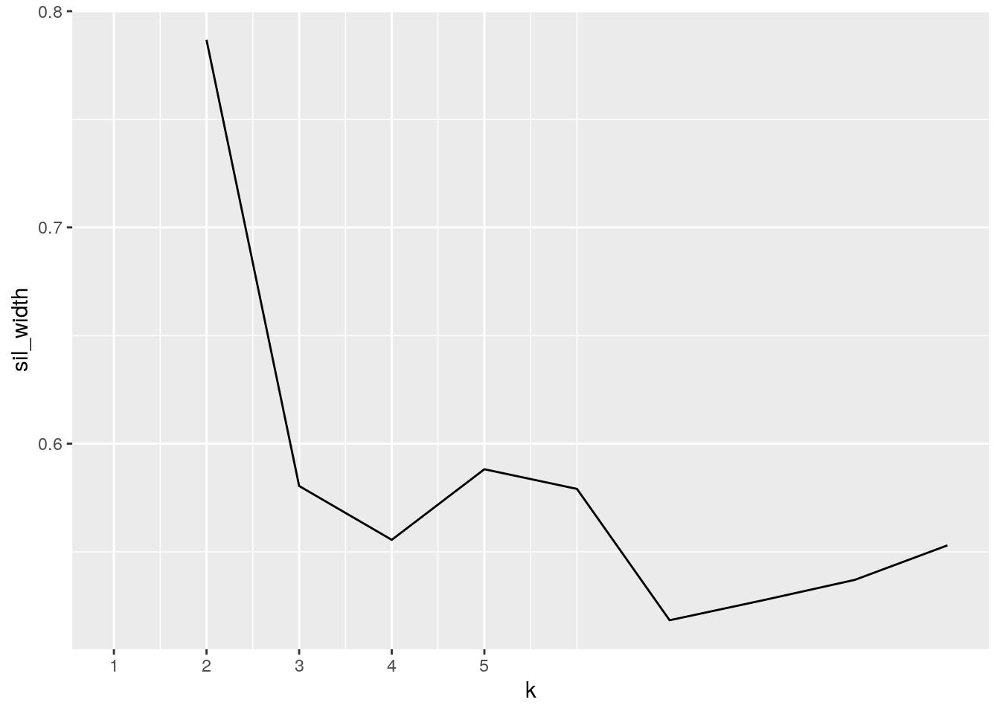
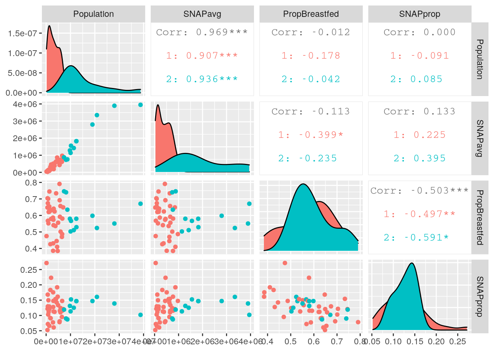

For this project, I decided to look at two datasets: the percentage of breastfed infants by state, and the monthly average number of persons participating in Supplemental Nutrition Assistance Program (SNAP) by state. These datasets were from KFF.org, a website by the Kaiser Family Foundation that contains a large amount of health and demographic data by state. The "Breastfed" dataset contains four variables: one for location, which lists the states and territories (excluding Puerto Rico) in the US, and three which represent the proportion of infants in each state that were breastfed at three timepoints: at six months, at twelve months, and at any point. The "SNAP" dataset contains three variables: location, which also lists the states and territories in the US, the total residents in the state, and the average number of monthly SNAP participants in the state. I am interested in women's health issues, including maternal issues such as breastfeeding, and wanted to see if there was any relationship between breastfeeding and the number of SNAP recipients, which can be treated as a demographic of people of low socioeconomic status, in states. I expect to see associations between high amounts of SNAP recipients and low rates of breastfeeding; this is based on a stigma against breastfeeding which is more common in areas with low socioeconomic status, as well as the realities that people relying on SNAP benefits may face different struggles in breastfeeding, such as external stressors, poor nutrition, and work restrictions.
library(tidyverse)
Breastfed <- read_csv("Breastfed.csv")
SNAP <- read_csv("State SNAP Population.csv")
head(Breastfed)## # A tibble: 6 x 4
## Location Ever_Breastfed Breastfeeding_at_6_mont… Breastfeeding_at_12_mon…
## <chr> <chr> <chr> <chr>
## 1 United States 0.841 0.583 0.353
## 2 Alabama 0.69 0.385 0.216
## 3 Alaska 0.919 0.674 0.439
## 4 Arizona 0.899 0.649 0.393
## 5 Arkansas 0.701 0.431 0.238
## 6 California 0.903 0.671 0.433head(SNAP)## # A tibble: 6 x 3
## Location Total_Residents Average_Monthly_SNAP_Participants
## <chr> <dbl> <chr>
## 1 United States 318498500 39651687
## 2 Alabama 4752600 766681
## 3 Alaska 709100 91995
## 4 Arizona 7004300 845733
## 5 Arkansas 2921300 372451
## 6 California 38745900 3949535I began by joining the datasets; I chose a full join, but since each dataset had exactly the same number of states, any join would've resulted in the same result. No data was lost in the joining process.
fullset <- full_join(Breastfed, SNAP, by = "Location")
head(fullset)## # A tibble: 6 x 6
## Location Ever_Breastfed Breastfeeding_a… Breastfeeding_a… Total_Residents
## <chr> <chr> <chr> <chr> <dbl>
## 1 United … 0.841 0.583 0.353 318498500
## 2 Alabama 0.69 0.385 0.216 4752600
## 3 Alaska 0.919 0.674 0.439 709100
## 4 Arizona 0.899 0.649 0.393 7004300
## 5 Arkansas 0.701 0.431 0.238 2921300
## 6 Califor… 0.903 0.671 0.433 38745900
## # … with 1 more variable: Average_Monthly_SNAP_Participants <chr>I then began tidying the data. While the SNAP dataset was already tidy, the Breastfed part of the new full dataset needs to be pivoted. I also recoded the time-based values to give them shorter names, renamed a few of the columns, and removed the "Footnotes" column which was simply a remnant of the data I used.
fullset <- fullset %>% pivot_longer(2:4, names_to = "Timepoint",
values_to = "Proportion") %>% mutate(Timepoint = recode(Timepoint,
Ever_Breastfed = "Any_time", Breastfeeding_at_6_months = "6_months",
Breastfeeding_at_12_months = "12_months")) %>% mutate(Footnotes = NULL) %>%
rename(SNAPavg = Average_Monthly_SNAP_Participants, Population = Total_Residents,
PropBreastfed = Proportion)
head(fullset)## # A tibble: 6 x 5
## Location Population SNAPavg Timepoint PropBreastfed
## <chr> <dbl> <chr> <chr> <chr>
## 1 United States 318498500 39651687 Any_time 0.841
## 2 United States 318498500 39651687 6_months 0.583
## 3 United States 318498500 39651687 12_months 0.353
## 4 Alabama 4752600 766681 Any_time 0.69
## 5 Alabama 4752600 766681 6_months 0.385
## 6 Alabama 4752600 766681 12_months 0.216I also needed to change the values of average monthly SNAP participants and the proportion breastfed from characters to integers.
fullset %>% mutate(SNAPavg = as.numeric(SNAPavg), PropBreastfed = as.numeric(PropBreastfed))## # A tibble: 162 x 5
## Location Population SNAPavg Timepoint PropBreastfed
## <chr> <dbl> <dbl> <chr> <dbl>
## 1 United States 318498500 39651687 Any_time 0.841
## 2 United States 318498500 39651687 6_months 0.583
## 3 United States 318498500 39651687 12_months 0.353
## 4 Alabama 4752600 766681 Any_time 0.69
## 5 Alabama 4752600 766681 6_months 0.385
## 6 Alabama 4752600 766681 12_months 0.216
## 7 Alaska 709100 91995 Any_time 0.919
## 8 Alaska 709100 91995 6_months 0.674
## 9 Alaska 709100 91995 12_months 0.439
## 10 Arizona 7004300 845733 Any_time 0.899
## # … with 152 more rowsI began by creating a new variable that describes the proportion of residents who receive SNAP benefits in a state.
fullset <- fullset %>% mutate(SNAPavg = as.numeric(SNAPavg),
PropBreastfed = as.numeric(PropBreastfed)) %>% mutate(SNAPprop = SNAPavg/Population)
head(fullset)## # A tibble: 6 x 6
## Location Population SNAPavg Timepoint PropBreastfed SNAPprop
## <chr> <dbl> <dbl> <chr> <dbl> <dbl>
## 1 United States 318498500 39651687 Any_time 0.841 0.124
## 2 United States 318498500 39651687 6_months 0.583 0.124
## 3 United States 318498500 39651687 12_months 0.353 0.124
## 4 Alabama 4752600 766681 Any_time 0.69 0.161
## 5 Alabama 4752600 766681 6_months 0.385 0.161
## 6 Alabama 4752600 766681 12_months 0.216 0.161I wanted to learn more about this new variable that I created, so I poked around a bit.
fullset %>% group_by(Location) %>% distinct(SNAPprop) %>% arrange(desc(SNAPprop)) %>%
head()## # A tibble: 6 x 2
## # Groups: Location [6]
## Location SNAPprop
## <chr> <dbl>
## 1 U.S. Virgin Islands 0.307
## 2 Guam 0.271
## 3 New Mexico 0.223
## 4 Louisiana 0.192
## 5 West Virginia 0.183
## 6 Mississippi 0.175fullset %>% group_by(Location) %>% distinct(SNAPprop) %>% arrange(SNAPprop) %>%
head()## # A tibble: 6 x 2
## # Groups: Location [6]
## Location SNAPprop
## <chr> <dbl>
## 1 Wyoming 0.0523
## 2 Utah 0.0609
## 3 New Hampshire 0.0660
## 4 North Dakota 0.0720
## 5 Kansas 0.0772
## 6 Minnesota 0.0782From this, it appears that the US Virgin Islands, Guam, and New Mexico have the highest proportion of people receiving SNAP benefits, while Wyoming, Utah, and New Hampshire have the lowest.
I continued exploring the rest of this dataset by looking at the summary statistics for all of my numeric variables, including the column I just created. Since the data for the United States overall would artifically inflate the mean of several variables, I also included the median.
fullset %>% summarize_if(is.numeric, list(median = median, mean = mean,
sd = sd), na.rm = T) %>% pivot_longer(1:12, names_to = "Statistic",
values_to = "Values") %>% separate(Statistic, into = c("Data",
"Statistic"))## # A tibble: 12 x 3
## Data Statistic Values
## <chr> <chr> <dbl>
## 1 Population median 4215550
## 2 SNAPavg median 585064
## 3 PropBreastfed median 0.581
## 4 SNAPprop median 0.124
## 5 Population mean 11801293.
## 6 SNAPavg mean 1510608.
## 7 PropBreastfed mean 0.593
## 8 SNAPprop mean 0.130
## 9 Population sd 42838810.
## 10 SNAPavg sd 5382404.
## 11 PropBreastfed sd 0.212
## 12 SNAPprop sd 0.0464The extent to which the US's population and SNAP average changes the mean is very clear if you compare the median and mean values for Population and SNAPavg, as well as the standard deviation. Disregarding these, the other means are higher than the medians, indicating the dataset is likely skewed right.
I then chose to look at summary statistics for the proportion of breastfed babies when grouped by timepoint.
fullset %>% group_by(Timepoint) %>% summarize(median = median(PropBreastfed,
na.rm = T), max = max(PropBreastfed, na.rm = T), min = min(PropBreastfed,
na.rm = T), mean = mean(PropBreastfed, na.rm = T))## # A tibble: 3 x 5
## Timepoint median max min mean
## <chr> <dbl> <dbl> <dbl> <dbl>
## 1 12_months 0.36 0.55 0.203 0.359
## 2 6_months 0.581 0.791 0.385 0.585
## 3 Any_time 0.842 0.953 0.662 0.836This revealed that the greatest difference between the minimum and maximum states occurred at the six month timepoint, so I chose to explore that further.
I filtered the dataset so that it only showed the six month timepoint, and returned only the rows where the proportion of babies that were breastfed was greater than 0.581, which was the median.
fullset %>% select(Location, Timepoint, PropBreastfed) %>% filter(Timepoint ==
"6_months", PropBreastfed > 0.581) %>% arrange(desc(PropBreastfed))## # A tibble: 26 x 3
## Location Timepoint PropBreastfed
## <chr> <chr> <dbl>
## 1 Minnesota 6_months 0.791
## 2 Washington 6_months 0.746
## 3 Hawaii 6_months 0.745
## 4 Virginia 6_months 0.74
## 5 Oregon 6_months 0.734
## 6 Vermont 6_months 0.704
## 7 South Dakota 6_months 0.701
## 8 Colorado 6_months 0.692
## 9 Alaska 6_months 0.674
## 10 California 6_months 0.671
## # … with 16 more rowsThis returned 26 rows, or half of the dataset. In looking at this, I was looking for signs of correlation between the states with the lowest proportion of SNAP recipients and the highest proportion of breastfed babies. Earlier, I found that Wyoming, Utah, and New Hampshire have the lowest proportion of people receiving SNAP benefits. These states were all represented in this half of the dataset, although they were not in the top 10 states with the highest proprtion of breastfed babies at six months.
I next did the same filtering process, but this time I returned only the rows where the proprtion of breastfed babies was less than 0.581.
fullset %>% select(Location, Timepoint, PropBreastfed) %>% filter(Timepoint ==
"6_months", PropBreastfed < 0.581) %>% arrange(PropBreastfed)## # A tibble: 26 x 3
## Location Timepoint PropBreastfed
## <chr> <chr> <dbl>
## 1 Alabama 6_months 0.385
## 2 Mississippi 6_months 0.386
## 3 Louisiana 6_months 0.41
## 4 West Virginia 6_months 0.426
## 5 Arkansas 6_months 0.431
## 6 Kentucky 6_months 0.445
## 7 Indiana 6_months 0.47
## 8 Guam 6_months 0.475
## 9 Tennessee 6_months 0.487
## 10 Missouri 6_months 0.502
## # … with 16 more rowsThe US Virgin Islands, Guam, and New Mexico had the highest proportions of people receiving SNAP benefits. The US Virgin Islands did not record breastfeeding data; Guam and New Mexico are both in this half of the dataset, but New Mexico has a higher proportion of breastfed babies at six months (0.579) than Guam (0.475).
I began by making a correlation heatmap of my numeric variables. To simplify this, I chose to only represent one timepoint, six months.
cormat <- fullset %>% filter(Timepoint=="6_months") %>% select_if(is.numeric) %>% cor(use="pair")
cormat %>% as.data.frame %>% rownames_to_column("var1") %>% pivot_longer(-1, "var2", values_to="correlation") %>%
ggplot(aes(var1, var2, fill=correlation)) + geom_tile() +
scale_fill_gradient2(low="red",mid="white",high="blue")+ #makes colors!
geom_text(aes(label=round(correlation,2)),color = "black", size = 4)+ #overlays correlation values
theme(axis.text.x = element_text(angle = 90, hjust = 1))+ #flips the x-axis labels
coord_fixed() Most notably, this shows that there is a perfect positive correlation between the average monthly number of SNAP recipients and the population of a state. More interestingly, there is also a negative correlation between the proportion of SNAP recipients and the proportion of infants who are breastfed at six months.
Next, I plotted the proportion of SNAP recipients against the proportion of breastfed infants in each state. I colored the points by the breastfeeding timepoints. I also added linear regression lines to better visualize the trends.
fullset %>% ggplot(aes(SNAPprop, PropBreastfed)) + geom_point(aes(color = Timepoint)) +
geom_smooth(aes(group = Timepoint, color = Timepoint), method = lm,
se = F) This shows that there is a negative correlation between the proportion of SNAP recipients and the proportion of breastfed infants at all timepoints, which supports my expectations.
I then tried to visualize this trend by overlaying a bar plot of the proportion of SNAP recipients in each state onto a boxplot of the proportion of breastfed infants in each state.
fullset %>% ggplot(aes(x = Location)) + geom_boxplot(aes(y = PropBreastfed),
color = "grey50") + geom_bar(aes(y = SNAPprop), stat = "summary",
fun = mean, fill = "mistyrose3") + theme(axis.text.x = element_text(angle = 45,
hjust = 1)) In general, states with high proportions of SNAP recipients (tall bars) tend to have lower proprtions of breastfed infants (lower boxplots). The inverse is also true. This relationship, however, is not perfect.
Lastly, I decided to perform PAM clustering on my numeric variables to see if they would result in any interesting clusters. I began by separating my numeric variables; once again, I chose to represent only the six months timepoint to ease interpretation of the data, and I removed the statistics for the US in general using filter, as leaving them in would result in a cluster with only the US.
library(cluster)
fullset_values <- fullset %>% filter(Timepoint == "6_months") %>%
select(2:3, 5:6) %>% na.omit() %>% filter(Population < 3e+08)Next, I needed to determine how many clusters to use. To do this, I graphed the silhouette widths, and found that two clusters would be best.
sil_width <- vector() #empty vector to hold mean sil width
for (i in 2:10) {
kms <- kmeans(fullset_values, centers = i) #compute k-means solution
sil <- silhouette(kms$cluster, dist(fullset_values)) #get sil widths
sil_width[i] <- mean(sil[, 3]) #take averages (higher is better)
}
ggplot() + geom_line(aes(x = 1:10, y = sil_width)) + scale_x_continuous(name = "k",
breaks = 1:5)
I performed PAM clustering on my numeric variables with two clusters.
pam1 <- fullset_values %>% pam(k = 2)I then looked at the summary statistics by cluster for each of my numeric variables.
fullset_values %>% mutate(cluster = pam1$clustering) %>% group_by(cluster) %>%
rename_all(function(x) str_replace(x, "_", "")) %>% summarize_if(is.numeric,
.funs = list(mean = mean, median = median, sd = sd), na.rm = T) %>%
pivot_longer(contains("_")) %>% separate(name, sep = "_",
into = c("variable", "stat")) %>% pivot_wider(names_from = "variable",
values_from = "value") %>% arrange(stat)## # A tibble: 6 x 6
## cluster stat Population SNAPavg PropBreastfed SNAPprop
## <int> <chr> <dbl> <dbl> <dbl> <dbl>
## 1 1 mean 3171897. 394013. 0.583 0.127
## 2 2 mean 15162946. 1954247. 0.595 0.128
## 3 1 median 2952350 379890 0.589 0.121
## 4 2 median 11355900 1556452 0.580 0.131
## 5 1 sd 2113000. 277156. 0.104 0.0450
## 6 2 sd 9260067. 1156981. 0.0813 0.0241Clustering appears to have been based on the population of the states and the average number of SNAP recipients. Cluster 1 looks like smaller states with lower numbers of SNAP recipients, and cluster 2 looks like larger states with higher numbers of SNAP recipients. Given the high correlation between average SNAP recipients and population that I found in my heat map above, these clusters do not seem very informative in determining any relationships between the proportion of infants that were breastfed and the number of SNAP recipients in each state. There is very little difference between clusters for both the proportion of breastfed infants and the proportion of SNAP recipients.
I then visualized my cluster assignments using the package GGally.
library(GGally)
ggpairs(fullset_values, aes(color = as.factor(pam1$clustering))) It confirms what I had thought based on the summary statistics. Cluster 2 is made up of high-population states with high numbers of SNAP recipients, and cluster 1 is made up of low-population states with low numbers of SNAP recipients. The breastfeeding data was not very informative; this is evident in looking at the graph showing the proportion of breastfed infants and the proportion of SNAP recipients. While clustering is certainly a powerful tool, I think that it is better suited for a different type of dataset. If I had more proportion-based data, I think that this would do better.